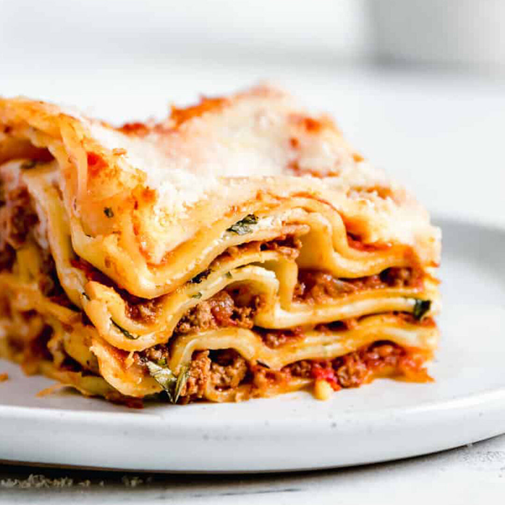

Lasagna
Description
This is a lasagna. It tastes good
Ingredients
1 (12 ounce) package Korean sweet potato noodles (dangmyun)
5 teaspoons sesame oil, divided
¼ cup soy sauce
4 teaspoons white sugar
1 tablespoon vegetable oil
3 carrots,cut into matchsticks
1 onion, thinly sliced
1 cup shiitake mushroons, sliced
6 spring onions, chopped
4 cloves garlic, minced
1 (16 ounce) bag fresh spinach
1 tablespoon sesame seeds (Optional)
Steps
Fill a large pot with lightly salted water and bring to a rolling boil; stir in noodles and return to a boil. Cook noodles uncovered, stirring occasionally, until tender yet firm to the bite, about 5 minutes. Drain and rinse with cold water.
Toss noodles with 2 teaspoons sesame oil in a bowl. Cut into shorter pieces using kitchen shears. Set aside.
Combine soy sauce and sugar in a bowl; set aside.
Heat vegetable oil in a skillet over medium-high heat. Sauté carrots and onion until soft, about 1 minute. Add mushrooms, green onions, and garlic. Sauté until fragrant, about 30 seconds. Add noodles, soy sauce mixture, and spinach. Cook and stir until noodles are heated through, 2 to 3 minutes more.
Remove the skillet from heat. Toss in remaining 1 tablespoon sesame oil and sesame seeds.